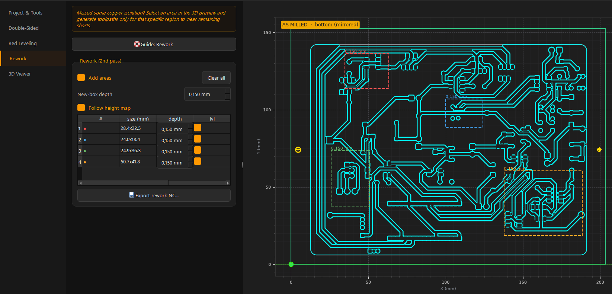

Photo check & rework
Did every channel cut through? Photograph the board, overlay it on the design, box the failures, re-cut them in one pass. Board stays on the machine — never re-zero XY.

Rework boxes
- Mark Add areas → drag a box over each failed spot. Each gets a table row.
- Depth New-box depth = default for the next box; edit per box in the table. Go slightly deeper than the trace depth.
- lvl toggle Warps the box to the probed surface (needs a height map). On by default.
- Export
Export rework NC... → one
<name>_<side>_<op>_rework.nc, only the boxed toolpaths, each at its own depth.
Photo overlay
- Shoot Straight-down, evenly lit, sharp, high-res. No glare.
- Load Load photo... → the anchor dialog opens.
- Click the 4 anchors The prompt names each hole. Scroll = zoom, drag = pan, right-click = undo. The live angle guide turns green when your clicks form a proper rectangle, red when you clicked the wrong hole.
- Blend Photo opacity slider + Traces dim slider (fade the toolpaths so the photo reads; boxes stay full-strength).
The photo is warped into machine coordinates — a defect on the photo is that spot on the machine. Saved with the session.
Detect from photo
Detect from photo walks every isolation channel and proposes a box wherever the photo shows no cut. A cut channel reads bright (exposed substrate + burrs); a failed one reads flat/dark like copper. Trained on real production ground truth (20/21 regions found).
- Shallow cuts look cut in any photo — depth failures need Probe boxes / Mesh check, not the camera.
- It refuses on blur, glare, low res, or bad anchors — reshoot rather than trust garbage.
- Review before export — delete false alarms.
Probe boxes
A spot failed because the surface sat higher than the mesh believed. Probe boxes re-measures each box center and deepens it by exactly the measured difference. Jog above leveling grid point 1 first, spindle OFF, red clip on the copper.